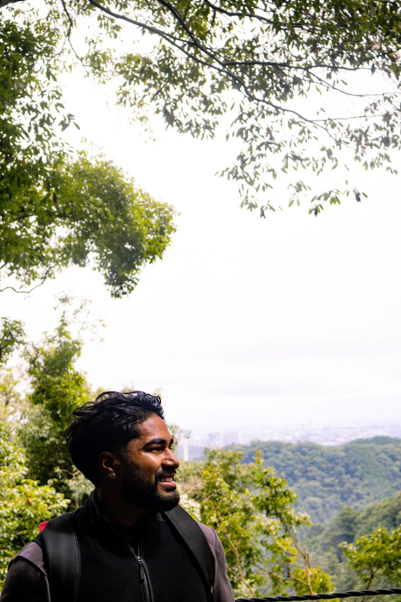
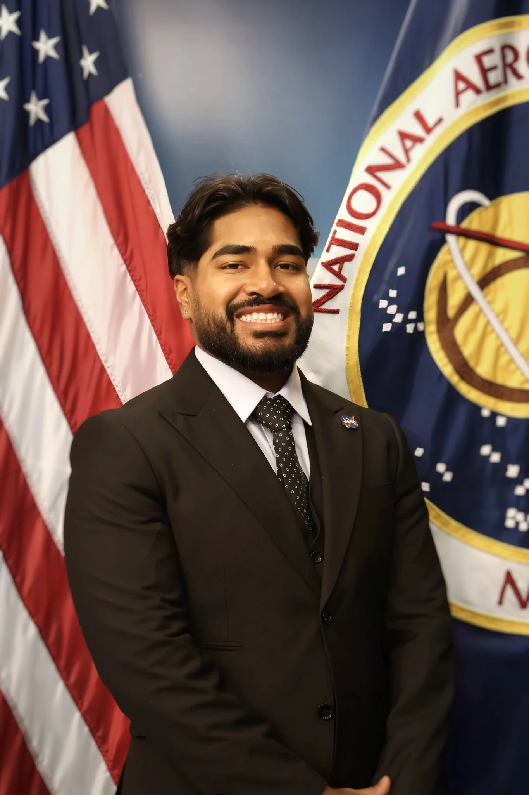
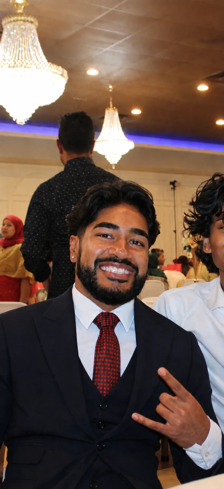
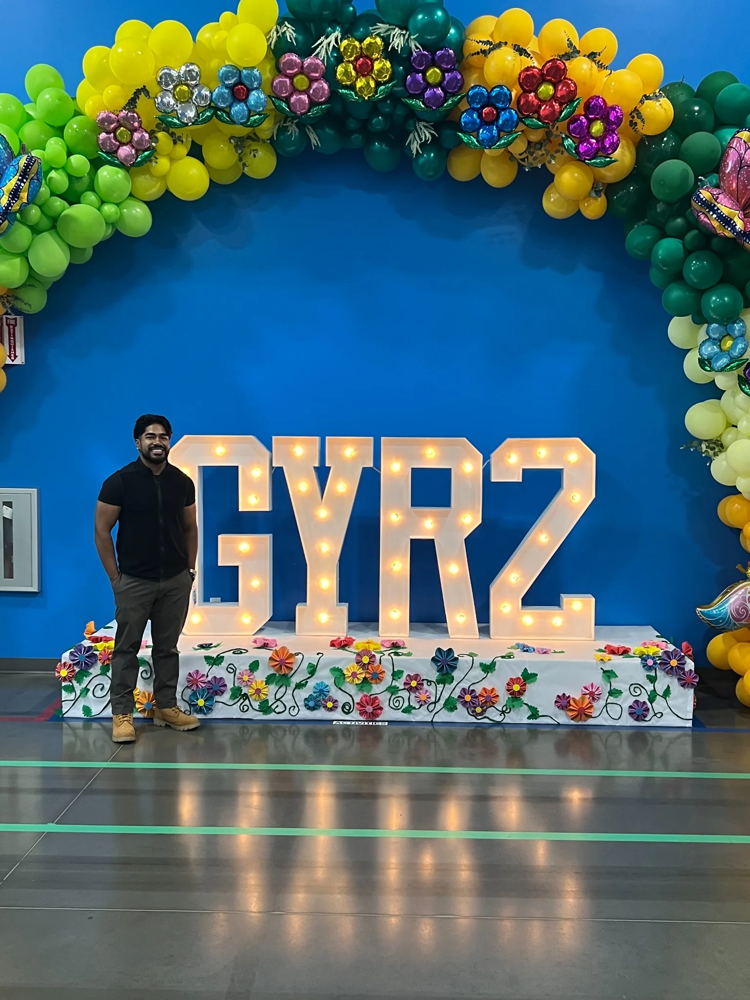
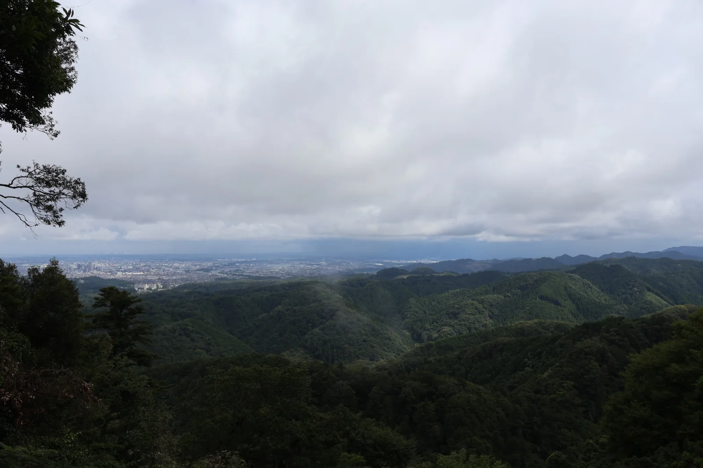
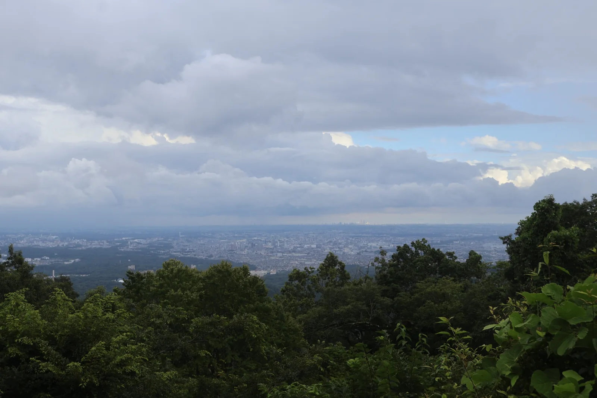

NASATECHNOLOGY
Making knowledge
go further.
Better tools. More connected people.
MOSTAQUE TAHAMID · HOUSTON, TEXAS
Business student. Relationship builder.
Always exploring.



EXPERIENCE ACROSS
BUSINESS. TECHNOLOGY. PEOPLE.
Better tools. More connected people.
Turning analysis into action.

Leading people. Improving the everyday.
Exploring what comes next in energy and AI.
AN IDEA OF MY OWN
MacroMap.A class idea turned into a working meal discovery prototype.

ALWAYS A STUDENT
From helping a customer to building a partnership.
Every experience adds a new perspective.
Schneider Electric
bp · NASA
Amazon · Enterprise
SEKCO · DoorDash
Macquarie · Home Depot
Netbrands
GOOD WORK IS A TEAM THING
CO FOUNDER & VP / COUGAR PRODUCT
LEADERSHIP & COMMUNITY
Mentoring students. Giving back.
Creating opportunities to grow together.
A LITTLE MORE ME
I moved from Bangladesh to the U.S. at 11. Today, I’m learning, building, and finding my own path in Houston.


LIFE BEYOND THE OFFICE
A camera, a good view, and a little time outside.
OPEN TO WHAT’S NEXT
Ideas, opportunities, and good questions are always welcome.
Let’s talk